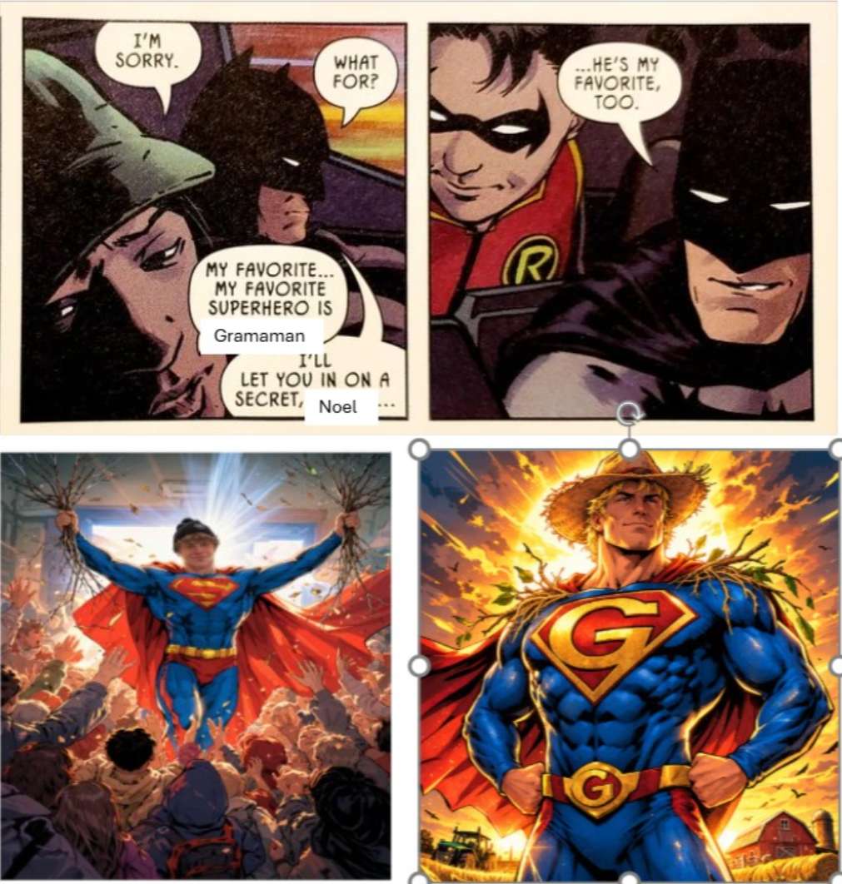
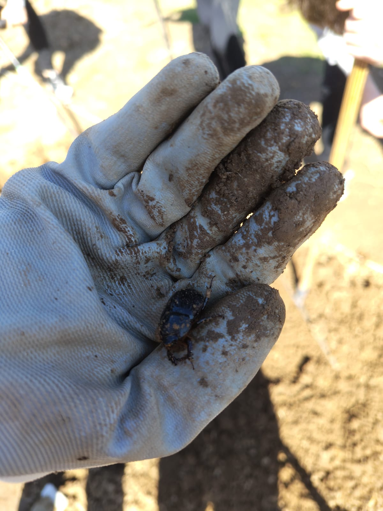
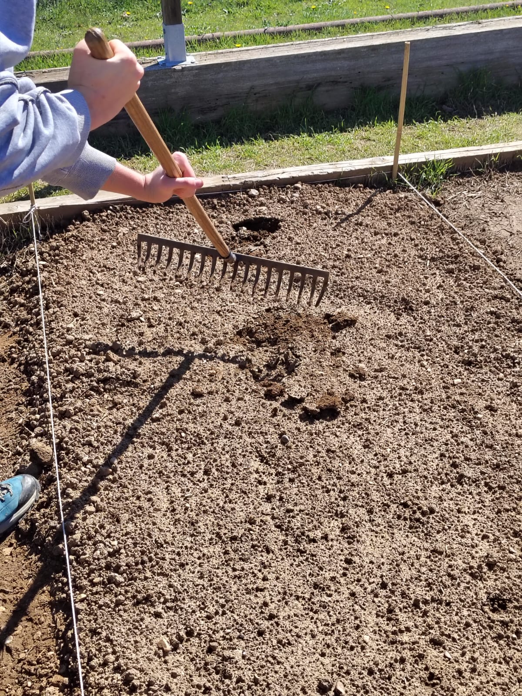

Tras la paliza física que supuso la doble cava de la sesión anterior, afrontamos los días 3 y 4 de nuestro proyecto de agroecología lidiando con la lluvia, la planificación estratégica y nuestro primer contacto real con las semillas.
Día 3: Lluvia y guerra psicológica en la biblioteca
En el tercer día de trabajo había estado lloviendo con intensidad la noche anterior. Cuando llegamos al bancal, Iván clavó el rastrillo en la tierra para comprobar su textura, la cual era más próxima al barro que a la tierra seca. Un jardinero que pasaba por ahí nos confirmó que sería contraproducente intentar trabajar en esas condiciones, ya que solo compactaríamos el suelo.
Decidimos aprovechar el tiempo planeando nuestros futuros cultivos informándonos en la biblioteca del jardín botánico. De camino, nos encontramos con Adolfo. Él parecía más que dispuesto a darnos una de sus características charlas, larga y detallada. Nos acompañó a la biblioteca, nos dio varios de sus propios libros y nos abrió la caseta de madera.
Iván, Juan Carlos y Alberto estuvimos leyendo varios libros tanto sobre la ecología de los huertos como sobre las plagas. Noel nos bendecía con su presencia. Gracias a todo esto, ya tenemos una idea muy aproximada a lo que vamos a hacer, pero qué inocentes tendríamos que ser para ponerlo en un blog donde cualquier rival pueda leerlo.

Imagen 1: A falta de imágenes de aquel día, véase una representación artística de "Grama-Man", por quien nuestra veneración aumentaba cada vez que había que agacharse a por una raíz seca, llegando a niveles de religión. Hecho por Juan Carlos con alguna inteligencia artificial.
Día 4: Semillado y la dictadura Juancrática
Este día fue el taller de semillado. Empezamos entrando al banco de semillas del parque botánico. A pesar de lo lúgubre que era el lugar, fue verdaderamente interesante.
Después, fuimos al huerto a aprender a hacer el sembrado: tierra hasta arriba, regar bien, usar diatomeas para evitar infecciones fúngicas, echar semillas como si fueran sal, cubrirlas de más tierra y dejar a la sombra. Luego nos explicaron cómo trasplantar los brotes sacándolos con cuidado por la raíz.
Como aún quedaba tiempo, decidimos ayudar al grupo de Ana Bejarano, Silvia Cuevas, Irene Parra y Raquel Tapia. Iván, Noel, Alberto y Juan Carlos cogimos buen ritmo, encontramos muchas lombrices y un escarabajo muy molón.

Imagen 2: El escarabajo molón. ChatGPT me dice que pertenece al género Meloe, pero es claramente de la familia Scarabaeidae.
Las chicas nos agradecieron nuestra ayuda, pero al parecer nos han acreditado como "el grupo de Juan Carlos", derribando la democracia de nuestro Bancal 4, que se desliza hacia una dictadura Juancrática.

Imagen 3: Iván arreglando una pisada accidental al bancal de Alex.
Reflexiones y apuntes para mis terrarios
- Manipular el suelo mojado lo compacta.
- Usar tierra de diatomeas evita infecciones por hongos.
- Ayudar a los demás puede resultar en un colapso del sistema democrático.
Lo que me llevo a mis cristales: El taller de semillado me recordó la importancia de la prevención de hongos. En mis terrarios, la clave son los colémbolos y no encharcar el sustrato.